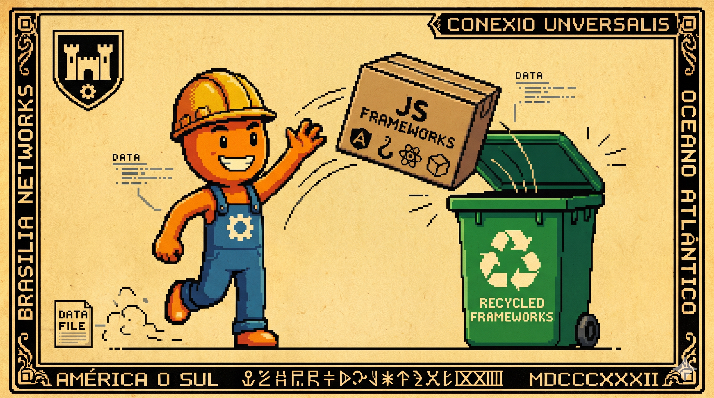

Canto IV: A Purificação do Código
A pasta 'node_modules' pesa mais que um caminhão,
Na hora da instalação, traz grande provação.
Mas limpamos o Purgatório de tanta complicação,
HTMX e HTML trazem a salvação!
A página atualiza em menos de um piscada de olho,
E o código ficou leve, sem tempero e sem molho.

O que é a Purificação do Código?
Definimos Purificação do Código no contexto do ponto de venda local como a remoção sistemática de complexidade acidental. No desenvolvimento de interfaces de caixas, essa complexidade refere-se ao acúmulo de dependências de compilação e a separação artificial entre cliente e servidor rodando dentro do mesmo computador (localhost).
Purificar significa simplificar o fluxo de renderização: eliminar serializações JSON ineficientes e acoplamentos desnecessários de runtimes no dispositivo de caixa, preferindo a renderização direta no servidor local para otimizar o tempo de resposta. Em vários cenários, runtimes baseados em JavaScript ou Node.js (ou deno/bun) prestam serviços essenciais de drivers e integrações locais, mas para o fluxo de renderização e estado do caixa, a simplicidade de templates HTML nativos se mostra mais eficiente.
O Labirinto da Complexidade Front-End e as Alternativas
A arquitetura web clássica dividiu a interface e a lógica em dois mundos separados (Back-end e Front-end). Para fazer um formulário simples enviar dados a um banco local, muitas aplicações de PDV modernas trazem dezenas de bibliotecas client-side pesadas, gerenciam estados de stores em memória e utilizam ciclos complexos de empacotamento.
O uso de Single Page Applications (SPAs) ou frameworks modernos (como React Server Components - RSCs, Solid, Qwik ou SvelteKit) oferece recursos brilhantes para interfaces que demandam estado local complexo, animações ricas, interações de arrastar e soltar (drag-and-drop) ou calculadoras reativas locais de alta frequência. Porém, no localhost de uma máquina de caixa de 2GB de RAM, se o ecossistema SPA não for agressivamente otimizado com bundles reduzidos (na faixa de 50-150KB em produção), o processamento excessivo do Virtual DOM e do compilador em tempo de execução pode gerar micro-travamentos na digitação de itens.
Código na Prática: SPA Tradicional vs. JTE + HTMX
Abaixo comparamos uma escrita simples de item sob o modelo SPA REST convencional contra o modelo HTML-First (HTMX/JTE). Esta comparação foca em modelos de acoplamento de estados:
❌ Exemplo SPA REST (Chamada Clássica de Client-Side State)
// Front-end React
const registrarItem = (id) => {
fetch(`/api/vendas/itens`, {
method: 'POST',
headers: { 'Content-Type': 'application/json' },
body: JSON.stringify({ itemId: id })
})
.then(res => res.json())
.then(data => setCupom(data));
};
✔️ Exemplo HTML-First (HTMX + JTE / Servidor Local)
<!-- HTML Declarativo do HTMX -->
<button hx-post="/vendas/itens"
hx-vals='js:{itemId: getBarcode()}'
hx-target="#tabela-itens"
hx-swap="outerHTML">
Registrar Item
</button>
Métricas de Complexidade e Build na Borda
Metodologia do Benchmark: Testes executados em hardware de caixa modesto (processador dual-core Celeron de 2GB de RAM) rodando build de produção compactado (gzip/brotli ativo) e navegador em modo estrito sem cache. A inicialização de tela monitorou o cold start do primeiro carregamento na máquina física local:
- Tamanho de Instalação node_modules: Reduzida de 750 MB (React/Webpack na pasta de build dev) para 0 MB (NPM-Free no caixa).
- Tamanho do Bundle Transferido: Reduzido de 2.4 MB (bundle SPA React dev não otimizado) para apenas 45 KB (HTMX local minificado).
- Tempo de Inicialização de Tela: Queda de 4.8 segundos para inicialização inicial da SPA sem cache para 0.05 segundos (HTML-First nativo servido pelo JTE local).
Trade-offs e a Otimização HTML-First
Embora o padrão HTML-First traga benefícios enormes na latência de inicialização e reduza o overhead de JS na borda, ele possui desvantagens claras a serem consideradas:
- Tighter Coupling: Há um acoplamento maior entre as definições de tela (templates) e o código do back-end, limitando a reutilização de componentes em plataformas totalmente diferentes (como aplicativos móveis).
- Round-trips Frequentes: Atualizações simples de tela que não exigem lógica de banco ainda demandam requisições HTTP locais (`localhost`), o que requer uma estruturação inteligente de componentes JTE locais.
- Complexidade de Testes de UI: Testes automatizados de interface dependem de renderizações completas do ciclo de templates, exigindo ferramentas de integração para validar a consistência visual.
⚖️ O Veredito da Bancada (Técnico vs. Negócios)
💻 Para Técnicos (A Baseline)
Em vez de carregar um interpretador JS pesado para gerenciar o Virtual DOM, o HTMX interage diretamente com as APIs nativas de requisições assíncronas do navegador via atributos declarativos (`hx-post`, `hx-target`, `hx-swap`). O servidor Spring responde apenas o fragmento HTML renderizado rapidamente pela engine JTE compilada, resultando em menor processamento de CPU local e zero overhead de serialização/deserialização JSON na interface.
👔 Para Negócios (O Retorno)
Manutenção simplificada do software e menos erros na tela. O sistema é extremamente estável, não sofre com travamentos ou lentidões de scripts e consome o mínimo de dados de rede das lojas para renderizar atualizações.
Conclusão da Purificação UI
Buscar a simplicidade no design de código e a redução de dependências desnecessárias na borda ajuda a garantir a estabilidade e a longevidade operacional do software. No CaraCore PDV, a renderização de telas é feita diretamente no servidor usando JTE (Java Template Engine) ou Thymeleaf, mantendo as atualizações de interface eficientes e livres de inchaço.
Com a interface saneada rodando HTML nativo de forma responsiva, o passo seguinte da nossa série é explorar a concorrência leve de drivers locais. No próximo canto, detalharemos como operamos balanças e impressoras locais sob concorrência intensa e sem travar a tela usando as Threads Virtuais do Java 25.
Hashtags
Contato
- E-mail: suporte@caracore.com.br
- Site: www.caracore.com.br
- LinkedIn: Cara Core Informática
Descubra a estabilidade do modelo HTML-First do CaraCore PDV e acabe com os erros de tela no balcão.
Simplificar Minhas Telas